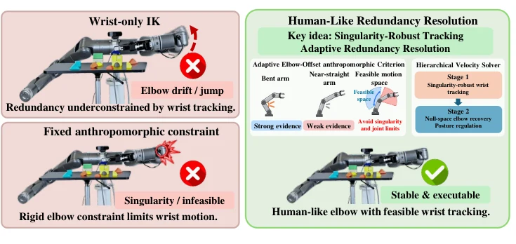
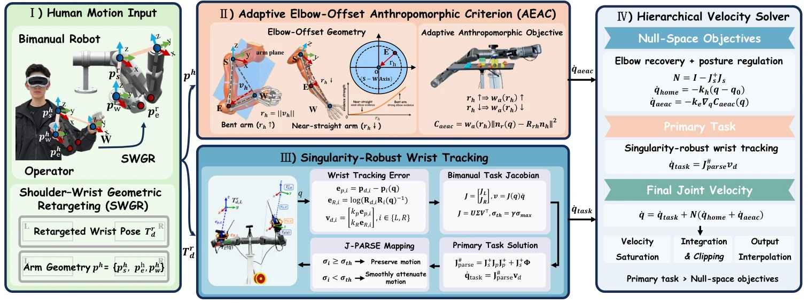
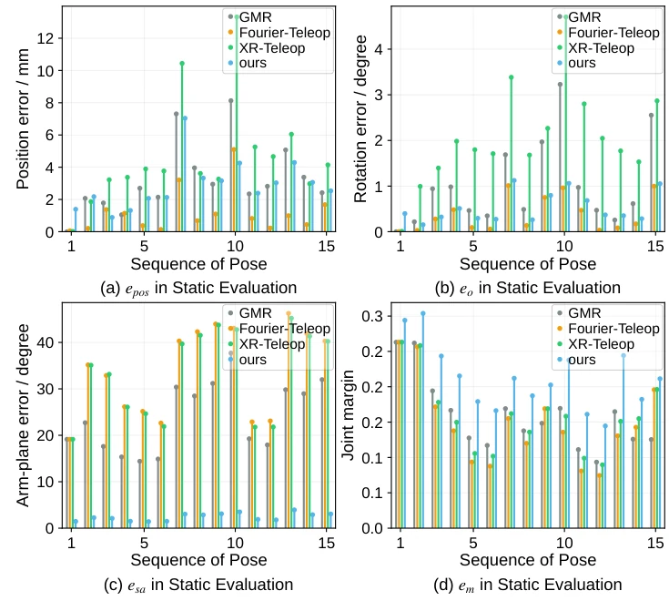
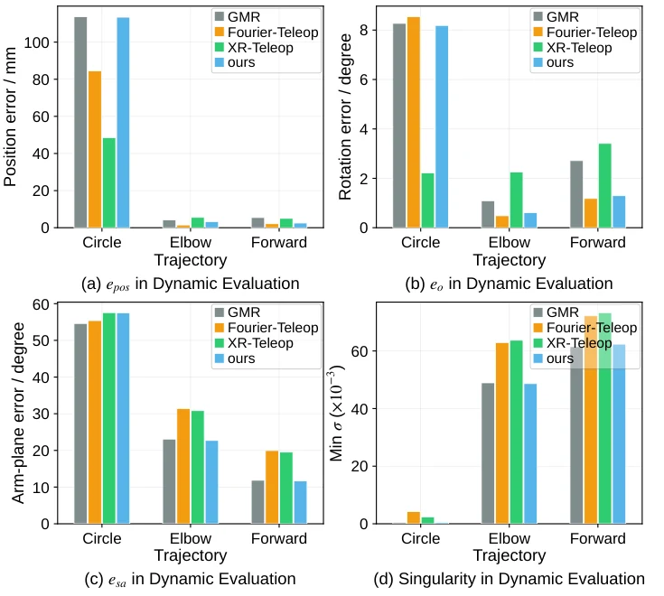
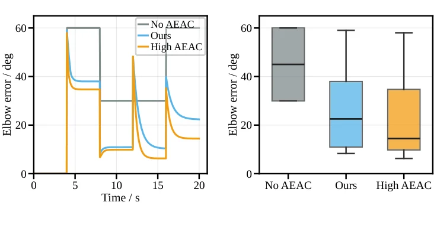
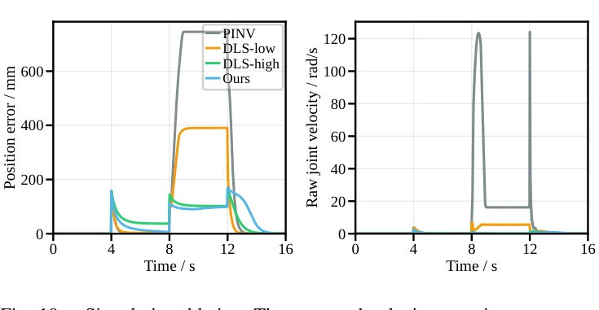
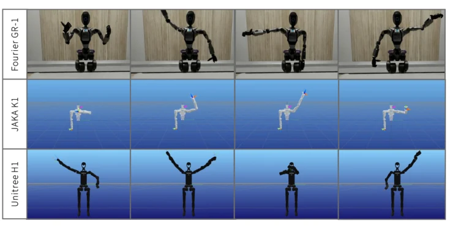
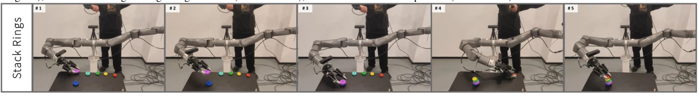
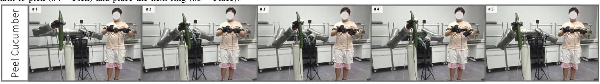

Abstract
Real-time bimanual humanoid teleoperation requires accurate wrist tracking and stable arm posture. Kinematic redundancy allows different elbow configurations for the same wrist pose. Existing methods that track only the wrists can therefore cause elbow drift or configuration jumps. Anthropomorphic constraints help guide elbow posture. However, fixed constraints can restrict singularity avoidance and impose unreliable elbow guidance as the human arm straightens.
We propose a human-like redundancy-resolution framework that prioritizes singularity-robust wrist tracking and uses adaptive elbow guidance to resolve redundancy. Shoulder–wrist geometric retargeting generates robot-scale wrist targets. Elbow-offset direction guides posture, and its magnitude controls guidance strength. Guidance weakens and deactivates as the human arm straightens. Finally, a hierarchical velocity solver implements singularity-robust wrist tracking and applies adaptive elbow guidance in the wrist-task null space.
In a fixed-wrist-target ablation, adaptive guidance reduces mean elbow-direction error by 54.4% compared with removing this guidance. In a workspace-boundary stress test, singularity-robust tracking reduces peak raw joint-velocity demand by 97.9% compared with the undamped pseudoinverse. Real-world bimanual tasks and cross-platform retargeting demonstrate practical utility across robot morphologies.
Why Redundancy Resolution Matters
A 7-DoF humanoid arm can realize the same 6-DoF wrist pose with different elbow configurations. Wrist-only tracking may yield drifting or abrupt elbow postures; rigid anthropomorphic guidance can instead over-constrain the arm near singular configurations.

Method
The framework combines robot-scale wrist retargeting with an elbow-offset preference that adapts to human posture reliability. A hierarchical velocity solver maintains wrist-task priority and applies anthropomorphic guidance in the null space.

Shoulder–Wrist Geometric Retargeting
Map human upper-arm motion and wrist orientation into robot-scale wrist targets while preserving the operator's end-effector intent.
Adaptive Elbow-Offset Guidance
Use elbow-offset direction to guide anthropomorphic posture; progressively attenuate and deactivate the guidance near arm extension.
Singularity-Robust Wrist Tracking
Suppress near-singular velocity amplification using robust wrist-task mapping and a hierarchical velocity solver with null-space objectives.
Results
Evaluation includes 15 static arm poses, dynamic motion sequences, fixed-wrist ablations, and a near-boundary singularity stress test.
- 54.4% lower mean elbow-direction error vs. removing adaptive elbow guidance
- 97.9% lower peak raw joint-velocity demand vs. undamped pseudoinverse
- 2.87 mm mean wrist position error in static pose evaluation
- 90 Hz real-time control frequency (4.35 ms average solve time)




Experiments
The same algorithmic framework is tested across JAKA K1, Fourier GR-1 and Unitree H1. Real-robot experiments include wide-range arm motion and bimanual manipulation.

Wide-Range Motion
Neutral posture, arm extension, near-singular configurations, recovery and return.
Ring Stacking
Coordinated grasping, transport, stacking and placement using both arms.

Cucumber Peeling
Stabilize an object with one arm and execute tool-based peeling with the other.

BibTeX
@misc{tan2026humanlike,
title={Human-Like Redundancy Resolution for Real-Time Bimanual Humanoid Teleoperation},
author={Tan, Chao and Sung, Ming Shin Cindy and Liang, Shuxian and Wan, Chaoqun and Huang, Zhen and Hua, Xian-Sheng},
year={2026},
note={Manuscript}
}